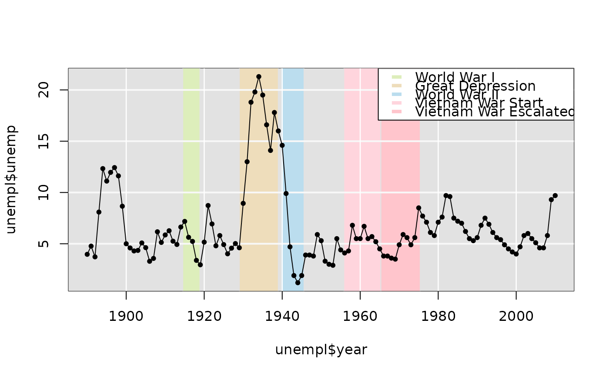

A compilation of two data sets that provides an estimate of unemployment from 1890 to 2010.
unemplFormat
A data frame with 121 observations on the following 3 variables.
- year
Year
- unemp
Unemployment rate, in percent
- us_data
1if from the Bureau of Labor Statistics,0otherwise
Source
The data are from Wikipedia at the following URL accessed on November 1st, 2010:
https://en.wikipedia.org/wiki/File:US_Unemployment_1890-2009.gif
{kind=link}
Below is a direct quote from Wikipedia describing the sources of the data:
Own work by Peace01234 Complete raw data are on Peace01234. 1930-2009 data are from Bureau of Labor Statistics (BLS), Employment status of the civilian noninstitutional population, 1940 to date retrieved on March 6, 2009 and February 12, 2010 from the BLS' FTP server. Data prior to 1948 are for persons age 14 and over. Data beginning in 1948 are for persons age 16 and over. See also "Historical Comparability" under the Household Data section of the Explanatory Notes at https://www.bls.gov/cps/eetech_methods.pdf. 1890-1930 data are from Christina Romer (1986). "Spurious Volatility in Historical Unemployment Data", The Journal of Political Economy, 94(1): 1-37. 1930-1940 data are from Robert M. Coen (1973). "Labor Force and Unemployment in the 1920's and 1930's: A Re-Examination Based on Postwar Experience", The Review of Economics and Statistics, 55(1): 46-55. Unemployment data was only surveyed once each decade until 1940 when yearly surveys were begun. The yearly data estimates before 1940 are based on the decade surveys combined with other relevant surveys that were collected during those years. The methods are described in detail by Coen and Romer.
Examples
#=====> Time Series Plot of Data <=====#
COL <- c("#DDEEBB", "#EEDDBB", "#BBDDEE", "#FFD5DD", "#FFC5CC")
plot(unempl$year, unempl$unemp, type="n")
rect(0, -50, 3000, 100, col="#E2E2E2")
rect(1914.5, -1000, 1918.9, 1000, col=COL[1], border="#E2E2E2")
rect(1929, -1000, 1939, 1000, col=COL[2], border="#E2E2E2")
rect(1939.7, -1000, 1945.6, 1000, col=COL[3], border="#E2E2E2")
rect(1955.8, -1000, 1965.3, 1000, col=COL[4], border="#E2E2E2")
rect(1965.3, -1000, 1975.4, 1000, col=COL[5], border="#E2E2E2")
abline(h=seq(0,50,5), col="#F8F8F8", lwd=2)
abline(v=seq(1900, 2000, 20), col="#FFFFFF", lwd=1.3)
lines(unempl$year, unempl$unemp)
points(unempl$year, unempl$unemp, pch=20)
legend("topright", fill=COL,
c("World War I", "Great Depression", "World War II",
"Vietnam War Start", "Vietnam War Escalated"),
bg="#FFFFFF", border="#FFFFFF")
